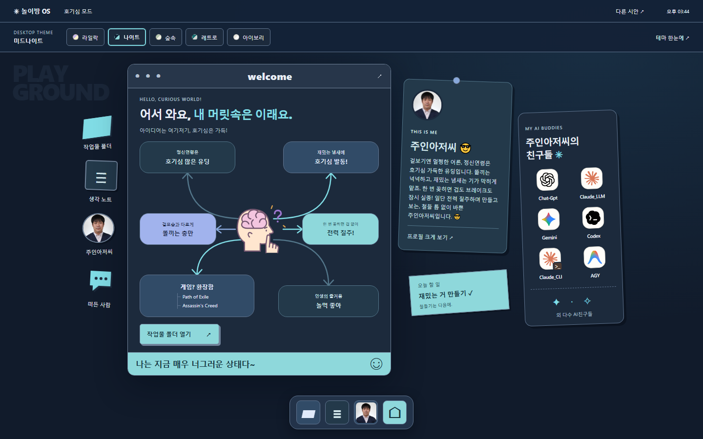
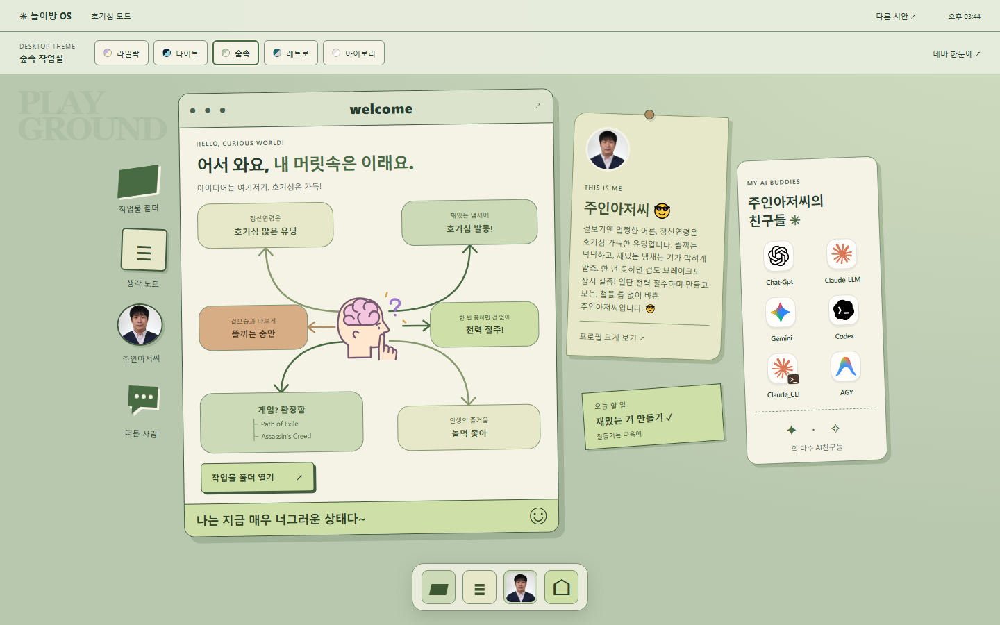
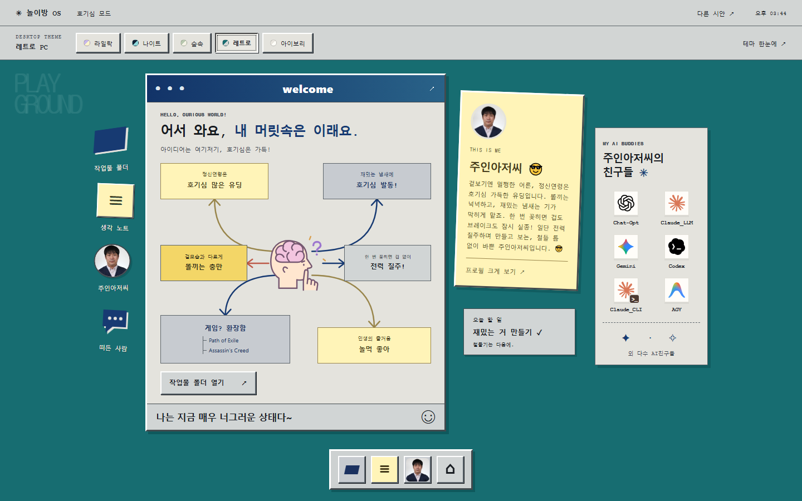
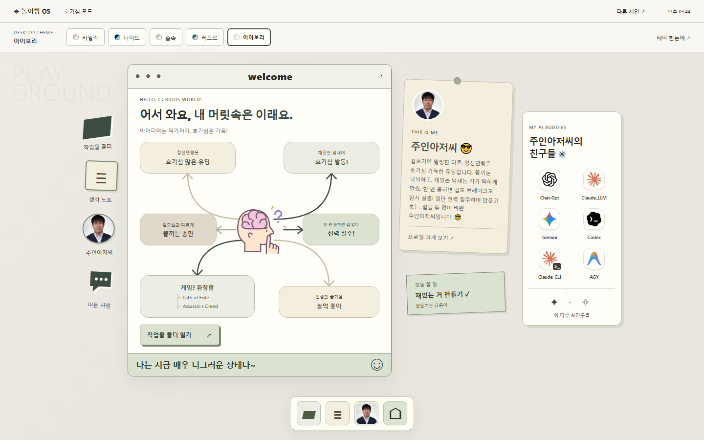

SAME PLAYGROUND. DIFFERENT MOOD.
주인아저씨의 작업실,
어떤 분위기로 할까요?
구조는 그대로, 창과 배경의 느낌은 다르게.
화면을 눌러 들어간 뒤 상단 버튼으로 테마를 바로 바꿔 볼 수 있어요.

라일락 놀이방
기존 시안의 장난기 있는 분위기.
보라색 책상과 알록달록한 메모.
이 테마로 구경하기

미드나이트
밤에 더 잘 떠오르는 아이디어.
깊은 네이비, 청록빛 포인트와 부드러운 그림자.
이 테마로 구경하기

숲속 작업실
차분한 초록빛 속에서 느긋하게.
세이지와 크림, 부드럽게 둥근 창.
이 테마로 구경하기

레트로 PC
그때 그 컴퓨터 앞에 앉은 기분.
청록색 바탕, 각진 창과 입체 버튼.
이 테마로 구경하기

아이보리 데스크
취향은 남기고 장식은 덜어낸 작업실.
밝은 종이색, 반듯한 창과 얇은 선.
이 테마로 구경하기